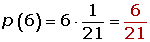
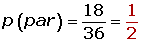
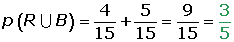

Problemas de probabilidad
1Hallar la probabilidad de que al lanzar al aire dos monedas, salgan:
1Dos caras
2Dos cruces
3Una cara y una cruz
2Hallar la probabilidad de que al levantar unas fichas de dominó se obtenga un número de puntos mayor que 9 o que sea múltiplo de 4.
3Un dado está trucado, de forma que las probabilidades de obtener las distintas caras son proporcionales a los números de estas. Hallar:
1La probabilidad de obtener el 6 en un lanzamiento
2La probabilidad de conseguir un número impar en un lanzamiento
4Se lanzan dos dados al aire y se anota la suma de los puntos obtenidos. Se pide:
1La probabilidad de que salga el 7
2La probabilidad de que el número obtenido sea par
3La probabilidad de que el número obtenido sea múltiplo de tres
5Se lanzan tres dados. Encontrar la probabilidad de que:
1Salga 6 en todos
2Los puntos obtenidos sumen 7
6Busca la probabilidad de que al echar un dado al aire, salga:
1Un número par
2Un múltiplo de tres
3Mayor que cuatro
7Se sacan dos bolas de una urna que se compone de una bola blanca, otra roja, otra verde y otra negra. Describir el espacio muestral cuando:
1La primera bola se devuelve a la urna antes de sacar la segunda
2La primera bola no se devuelve
8Una urna tiene ocho bolas rojas, 5 amarilla y siete verdes. Se extrae una al azar de que:
1Sea roja
2Sea verde
3Sea amarilla
4No sea roja
5No sea amarilla
9Una urna contiene tres bolas rojas y siete blancas. Se extraen dos bolas al azar. Escribir el espacio muestral y hallar la probabilidad de:
1Extraer las dos bolas con reemplazamiento
2Sin reemplazamiento
10Se extrae una bola de una urna que contiene 4 bolas rojas, 5 blancas y 6 negras, ¿cuál es la probabilidad de que la bola sea roja o blanca? ¿Cuál es la probabilidad de que no sea blanca?
11En una clase hay 10 alumnas rubias, 20 morenas, cinco alumnos rubios y 10 morenos. Un día asisten 44 alumnos, encontrar la probabilidad de que el alumno que falta:
1Sea hombre
2Sea mujer morena
3Sea hombre o mujer
12En un sobre hay 20 papeletas, ocho llevan dibujado un coche las restantes son blancas. Hallar la probabilidad de extraer al menos una papeleta con el dibujo de un coche:
1Si se saca una papeleta
2Si se extraen dos papeletas
3Si se extraen tres papeletas
13Los estudiantes A y B tienen respectivamente probabilidades 1/2 y 1/5 de suspender un examen. La probabilidad de que suspendan el examen simultáneamente es de 1/10. Determinar la probabilidad de que al menos uno de los dos estudiantes suspenda el examen.
14Dos hermanos salen de casa. El primero mata un promedio de 2 piezas cada 5 disparos y el segundo una pieza cada 2 disparos. Si los dos disparan al mismo tiempo a una misma pieza, ¿cuál es la probabilidad de que la maten?
15Una clase consta de 10 hombres y 20 mujeres; la mitad de los hombres y la mitad de las mujeres tienen los ojos castaños. Determinar la probabilidad de que una persona elegida al azar sea un hombre o tenga los ojos castaños.
16La probabilidad de que un hombre viva 20 años es ¼ y la de que su mujer viva 20 años es 1/3. Se pide calcular la probabilidad:
1De que ambos vivan 20 años.
2De que el hombre viva 20 años y su mujer no.
3De que ambos mueran antes de los 20 años.
17Calcular la probabilidad de sacar exactamente dos cruces al tirar una moneda cuatro veces
18Un grupo de 10 personas se sienta en un banco. ¿Cuál es la probabilidad de que dos personas fijadas de antemano se sienten juntas
19Se extraen cinco cartas de una baraja de 52. Hallar la probabilidad de extraer:
14 ases
24 ases y un rey
33 cincos y 2 sotas
4Un 9, 10, sota, caballo y rey en cualquier orden
53 de un palo cualquiera y 2 de otro
6Al menos un as
- 1
- 2
- 3
- 4
- 5
- 6
- 7
- 8
- 9
- 10
- 11
- 12
- 13
- 14
- 15
- 16
- 17
- 18
- 19
Ejercicio 1 resuelto
Hallar la probabilidad de que al lanzar al aire dos monedas, salgan:
Soluciones:1Dos caras
2Dos cruces
3Una cara y una cruz
Ejercicio 2 resuelto
Hallar la probabilidad de que al levantar unas fichas de dominó se obtenga un número de puntos mayor que 9 o que sea múltiplo de 4.
Ejercicio 3 resuelto
Un dado está trucado, de forma que las probabilidades de obtener las distintas caras son proporcionales a los números de estas. Hallar:
Soluciones:1La probabilidad de obtener el 6 en un lanzamiento

2La probabilidad de conseguir un número impar en un lanzamiento
Ejercicio 4 resuelto
Se lanzan dos dados al aire y se anota la suma de los puntos obtenidos. Se pide:
Soluciones:1La probabilidad de que salga el 7
2La probabilidad de que el número obtenido sea par

3La probabilidad de que el número obtenido sea múltiplo de tres
Ejercicio 5 resuelto
Se lanzan tres dados. Encontrar la probabilidad de que:
Soluciones:1Salga 6 en todos
2Los puntos obtenidos sumen 7
Ejercicio 6 resuelto
Busca la probabilidad de que al echar un dado al aire, salga:
Soluciones:1Un número par
2Un múltiplo de tres
3Mayor que cuatro
Ejercicio 7 resuelto
Se sacan dos bolas de una urna que se compone de una bola blanca, otra roja, otra verde y otra negra. Describir el espacio muestral cuando:
Soluciones:1La primera bola se devuelve a la urna antes de sacar la segunda
E = {BB, BR, BV, BN, RB, RR, RV, RN, VB, VR, VV, VN, NB, NR, NV, NN}
2La primera bola no se devuelve
E = { BR, BV, BN, RB, RV, RN, VB, VR, VN, NB, NR, NV}
Ejercicio 8 resuelto
Una urna tiene ocho bolas rojas, 5 amarilla y siete verdes. Se extrae una al azar de que:
Soluciones:1Sea roja
2Sea verde
3Sea amarilla
4No sea roja
5No sea amarilla
Ejercicio 9 resuelto
Una urna contiene tres bolas rojas y siete blancas. Se extraen dos bolas al azar. Escribir el espacio muestral y hallar la probabilidad de:
Soluciones:1Extraer las dos bolas con reemplazamiento
2Sin reemplazamiento
Ejercicio 10 resuelto
Se extrae una bola de una urna que contiene 4 bolas rojas, 5 blancas y 6 negras, ¿cuál es la probabilidad de que la bola sea roja o blanca? ¿Cuál es la probabilidad de que no sea blanca?

Ejercicio 11 resuelto
En una clase hay 10 alumnas rubias, 20 morenas, cinco alumnos rubios y 10 morenos. Un día asisten 44 alumnos, encontrar la probabilidad de que el alumno que falta:
Soluciones:1Sea hombre
2Sea mujer morena
3Sea hombre o mujer
Ejercicio 12 resuelto
En un sobre hay 20 papeletas, ocho llevan dibujado un coche las restantes son blancas. Hallar la probabilidad de extraer al menos una papeleta con el dibujo de un coche:
Soluciones:1Si se saca una papeleta
2Si se extraen dos papeletas
3Si se extraen tres papeletas
Ejercicio 13 resuelto
Los estudiantes A y B tienen respectivamente probabilidades 1/2 y 1/5 de suspender un examen. La probabilidad de que suspendan el examen simultáneamente es de 1/10. Determinar la probabilidad de que al menos uno de los dos estudiantes suspenda el examen.
Ejercicio 14 resuelto
Dos hermanos salen de casa. El primero mata un promedio de 2 piezas cada 5 disparos y el segundo una pieza cada 2 disparos. Si los dos disparan al mismo tiempo a una misma pieza, ¿cuál es la probabilidad de que la maten?


Ejercicio 15 resuelto
Una clase consta de 10 hombres y 20 mujeres; la mitad de los hombres y la mitad de las mujeres tienen los ojos castaños. Determinar la probabilidad de que una persona elegida al azar sea un hombre o tenga los ojos castaños.
Ejercicio 16 resuelto
La probabilidad de que un hombre viva 20 años es ¼ y la de que su mujer viva 20 años es 1/3. Se pide calcular la probabilidad:
Soluciones:1De que ambos vivan 20 años

2De que el hombre viva 20 años y su mujer no
3De que ambos mueran antes de los 20 años
Ejercicio 17 resuelto
Calcular la probabilidad de sacar exactamente dos cruces al tirar una moneda cuatro veces
Ejercicio 18 resuelto
Un grupo de 10 personas se sienta en un banco. ¿Cuál es la probabilidad de que dos personas fijadas de antemano se sienten juntas
Ejercicio 19 resuelto
Se extraen cinco cartas de una baraja de 52. Hallar la probabilidad de extraer:
Soluciones:14 ases
24 ases y un rey
33 cincos y 2 sotas
4Un 9, 10, sota, caballo y rey en cualquier orden
53 de un palo cualquiera y 2 de otro
6Al menos un as
 Ejercicios
Ejercicios